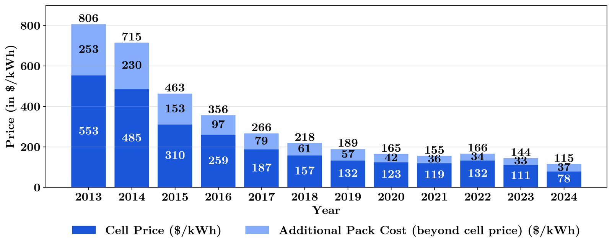

TUM · 2025 · Case study
Bachelor's Thesis: BESS Connection Requests in Germany
Rising Connection Requests for Battery Energy Storage Systems in Germany: Drivers and Implications. B.Sc. thesis at the Technical University of Munich, graded 1.3.

By March 2025, battery storage projects had requested 340 GW of grid connections in Germany. The thesis examines what drives this demand and what it means for the grid.
Highlights
- Revenue side: arbitrage trading dominates. Day-ahead prices in 2024, the year most requests were filed, show clearly higher volatility; ancillary services play a subordinate role.
- Cost side: strong cost degression, especially in 2024. Overall the economics of BESS improved significantly.
- Because of how transmission system operators allocate connections, the 340 GW figure is hard to interpret as real demand.
- BESS matter for the future grid, but in excessive numbers they can stress it, above all within a single bidding zone. Some simulation approaches do not reflect how batteries are actually traded.
